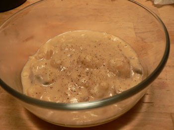

Potato soup
By sheer coincidence, mom and I both made soup tonight with things lying around the house. I can attest to her amazing ability to make a soup out of nothing. A few years ago on Halloween, after the trick-or-treaters stopped coming, we realized we had nothing in the house to eat. Mom went out to the porch, and an hour later, she had a fabulous pumpkin soup on the table.
I planned to make chicken breasts tonight, but I had a surplus of potatoes with which I decided to make a hearty potato soup, which I realize looks a bit like puke.

This was only the second soup I’ve ever made, and I’m starting to realize how easy and fun it is. I didn’t even bother with any of the thousand recipes I found at epicurious, because I had several things I wanted to taste specifically. There is little to no chance you’ll ever have all of the following lying around, but the point is to just throw in whatever comes out positively in your flavor calculation.
I cooked a few dried cèpes in some chicken broth, added three chopped Russet potatoes, one chopped onion, one star anise pod, and five or six chopped garlic cloves. Once the potatoes softened, I mashed them with a wooden spoon, added a dollop of heavy cream and salt and pepper, and then threw in a big hunk of gorgonzola dolce. It all mixed together very well, especially the dried mushrooms, gorgonzola, and star anise.
Best of all, I didn’t break any large appliances.
Comments
Ha-ha—I hope your readers know not to try that pumpkin thing at home because that was a joke and Halloween pumpkins do not, in fact, make good soup! I only tried cooking with one once and a watery, tasteless mess it was, indeed.
Your soup sounds great although at first the star anise threw me. Then I reasoned that star anise is vaguely in the tarragon family of flavors and since I commonly season potato soup with tarragon I was able to breathe again.
What I like about these soups is that when you think you have nothing to eat you don’t have to order pizza; you can get a great meal on the table in less time than it would take for the pizza to arrive and spend virtually nothing, in fact often using up ingredients that you might have wound up throwing away. As my father would say “I wonder what the poor people are eating tonight?”
Mommy
You’re totally right. Anyway I’m scared of ordering in for some reason. We’ve only ordered once since moving in here. I’d much rather just do something simple like spaghetti and parmesan cheese. (And canned tomatoes! Cook’s Illustrated gave me the go-ahead to use Progresso canned tomatoes with basil, and I always keep a few cans on hand in case the wolf is at the door).
Sorry my star anise gave you a panic. I hesitated for about fifteen seconds with the star anise above the pan. I kept smelling the soup and smelling the star, and finally I decided it was all very musty and I just went for it. I suppose I could have left it out, but I am addicted to the smell of star anise wafting through the apartment.
Add a comment